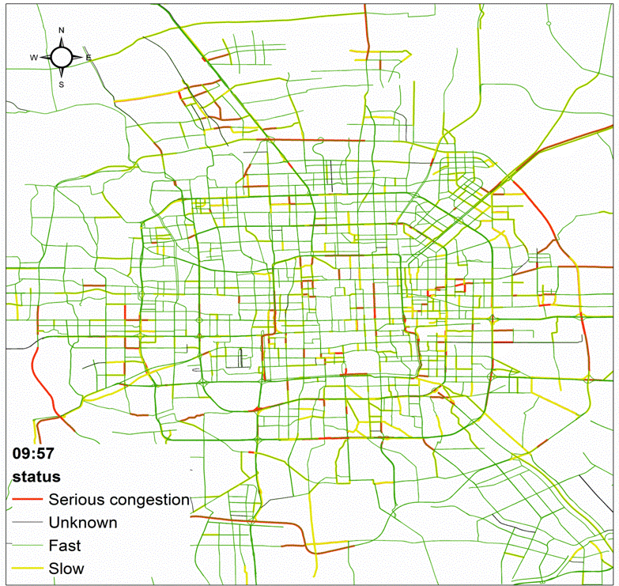

Detecting urban traffic congestion patterns from multi-source data, and estimating vehicle emissions through real-time video recognition with deep learning, to better understand how transportation shapes urban air quality.

Spatio-temporal congestion patterns identified using multi-source data fusion and mining techniques.
Traffic-related air pollutant emissions estimated by real-time video recognition and deep learning across functional zones.
Computers, Environment and Urban Systems 77, 101364
Journal of Cleaner Production 238, 117881